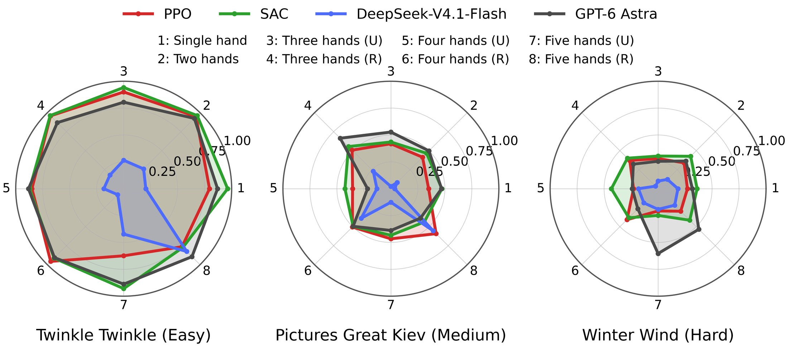
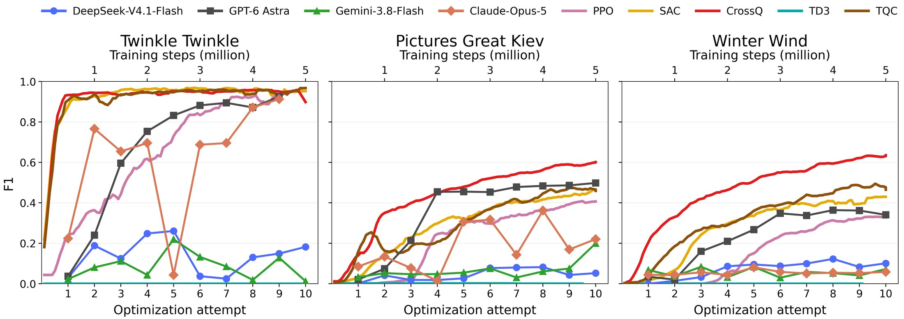
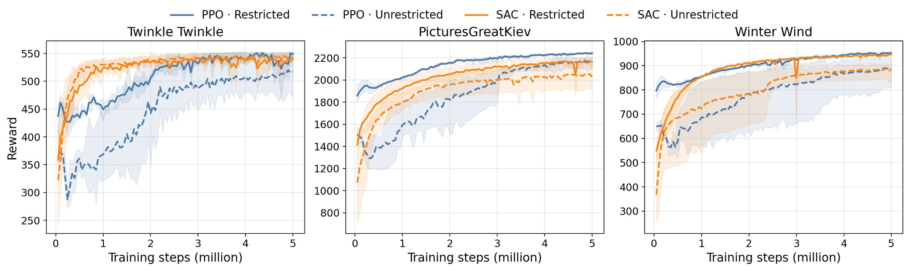

Standard RL
How well can a policy play, as repertoire and the number of hands grow?
Hand settings. Eight hand settings from one to five Shadow Hands. Unrestricted hands move freely across the keyboard; restricted hands are each confined to a fixed region, which keeps exploration and credit assignment tractable as the number of hands grows.
Reward. Following RoboPianist, rt = rtkey + rtmatch − λenergy rtenergy, rewarding correct key presses, fingertip-to-key proximity, and low actuation. Two variants: a fingering-annotated reward, and an optimal-transport reward that needs no fingering annotations and so supports arbitrary MIDI files and hand configurations.
Baselines. PPO, SAC, CrossQ, TD3, TQC, and four LLM-based agents that optimize keyframes over ten iterations.
Results


Takeaway. RL methods improve F1 more steadily, while LLM-based agents show less consistent gains across attempts, but can outperform some RL baselines on certain pieces, especially with more hands. Restricting hand mobility makes learning easier.
More results: restricted vs. unrestricted hands
